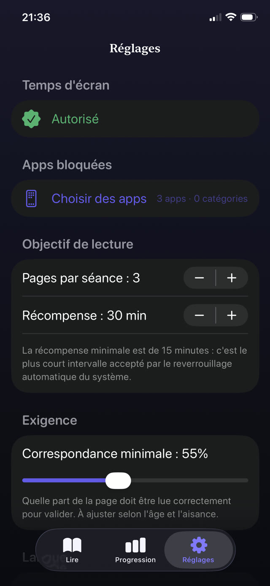

Ce détail de conception explique pourquoi le conseil habituel donne peu de résultats. Une limite qui dépend de la décision de s'arrêter affronte un système bâti pour qu'aucune décision d'arrêt ne soit jamais nécessaire.


Pourquoi les limites de temps seules donnent peu
Un plafond quotidien semble juste, mais en pratique l'enfant dépense son quota d'une traite puis en réclame davantage. Aucun moment à l'intérieur de l'expérience ne suggère une pause, donc la limite n'arrive jamais que comme une interruption venue de l'extérieur.
Pire : quand la limite tombe, rien ne la remplace. L'ennui n'est pas un plan. C'est ce qui rend le contournement intéressant.
Ce qui réduit vraiment l'attraction
- Que l'ouvrir coûte quelque chose. Pas une punition, un prix : dix minutes de lecture achètent la session. Le geste réflexe a maintenant une étape devant lui.
- Tuer l'habitude de la lecture automatique à la source. Désactivez la lecture automatique dans l'app YouTube et activez les rappels de pause. L'effet est modeste, mais gratuit.
- Bloquer aussi la version web. Verrouiller l'app pendant que Safari charge le site n'est pas une limite, c'est un détour.
- Que le téléphone dorme ailleurs. La plupart des plaintes sur les fils sont en réalité des plaintes sur l'heure du coucher.
- Garder la règle identique chaque jour. Les règles prévisibles cessent d'être personnelles. Les règles variables deviennent des négociations quotidiennes.
En parler sans faire la morale
Les enfants entendent « les écrans, c'est mauvais pour toi » comme un jugement sur leurs goûts, et ils l'écartent. Ce qui passe mieux, c'est l'honnêteté sur la conception : ces apps sont faites par de très bons ingénieurs dont le métier est de rendre l'arrêt difficile, et les battre est réellement difficile.
Ce cadrage en fait un problème partagé plutôt qu'un défaut de caractère. Vous ne les accusez pas de faiblesse ; vous leur donnez un outil pour un combat équitable.
Mettre un livre devant le fil
C'est ce que fait Guardian Reader, mécaniquement. YouTube, TikTok, Instagram ou toute autre app que vous choisissez reste verrouillée derrière le système Temps d'écran d'Apple. Pour l'ouvrir, votre enfant lit à voix haute une page d'un livre papier et l'app vérifie la lecture avant de libérer les minutes gagnées.
Ça marche parce que le péage est petit, honnête et difficile à contourner par la parole. Il n'y a personne avec qui négocier : la page doit être lue à voix haute avant que les minutes n'apparaissent.
Le problème de la lecture automatique, réglé de l'extérieur
Le fil infini ne se termine jamais tout seul, donc la fin doit venir du système. Quand les minutes gagnées expirent, Guardian Reader reverrouille les apps automatiquement, même app fermée et téléphone dans la poche de votre enfant. Aucun décompte à contester, aucune demande de cinq minutes de plus.
La lecture débloque l'écran.
Gratuit · Sans compte, sans suivi
Télécharger Guardian Reader pour iPhone